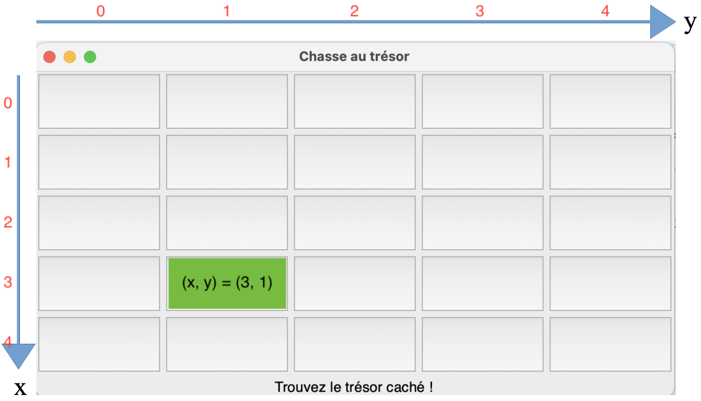

Jeu - Chasse au trésor¶
Présentation et explications¶
Présentation du jeu
L'objectif de ce TP est de créer un petit jeu de chasse au trésor en Python, dans lequel le but est de trouver un trésor dans une grille de jeu de taille donnée.
La grille contient des boutons cliquables. Le joueur devra alors cliquer sur les boutons de son choix, avec à chaque erreur un indice lui indiquant s'il se rapproche ou s'il s'éloigne du trésor.
Le nombre de tentatives effectuées sera stocké et affiché à la fin du jeu.
Le module tkinter sera utilisé pour gérer l'interface graphique du jeu.
Corrigé
Voici le corrigé détaillé de ce programme :
Prenez connaissance du programme corrigé, lisez bien les commentaires.
On a ajouté une fonction desactiver_boutons_cliques() qui permet de désactiver les boutons sur lesquels le joueur a cliqué (et ainsi éviter qu'il reclique dessus).
En cas de difficultés de compréhension de certaines parties du programme, n'hésitez pas à me contacter.
Grille de jeu et coordonnées
La grille de jeu est carrée, il y a donc autant de lignes que de colonnes.
Les axes en x et en y se présentent ainsi :

Sur cette grille de taille N = 5, le bouton colorié en vert aura donc pour coordonnées x = 3 et y = 1.
Important : Les coordonnées x et y commencent à partir de l'indice 0, et non pas 1.
La grille de jeu est représentée avec une nouvelle structure de données : une liste.
Une liste est créée à l'aide de crochets.
Par exemple, une liste contenant les éléments 4, 8 et 2 se crée ainsi :
On peut ensuite récupérer un élément de cette liste à l'aide de son indice. Les indices commencent à partir de 0. Pour récupérer le premier élément de la liste, on écrira :
Pour créer un tableau (à deux dimensions), on utilise une liste de listes.
Chaque ligne du tableau sera représentée par une sous-liste de la liste principale.
Voici un exemple de tableau en Python :
On a défini la variable tab sur 3 lignes ici pour la compréhension, mais on peut très bien l'écrire sur une seule ligne :
Ainsi, pour récupérer par exemple l'élément 4, on écrira :
Cela correspond au premier élément de la 2ème ligne.
Constante et variables globales
Les variables globales sont des variables qui peuvent être utilisées n'importe où dans un programme, y compris à l'intérieur des fonctions. Elles se trouvent généralement au début d'un programme, juste après les imports :
N = 5 # Constante définissant la taille de la grille
# Coordonnées du trésor (choisies aléatoirement au début du jeu)
TRESOR_X = randint(...)
TRESOR_Y = randint(...)
# Variables pour stocker la position de la dernière case cliquée par le joueur (initialement None)
derniere_pos_x = None
derniere_pos_y = None
# Compteur de tentatives (initialement 0)
tentatives = 0
Une constante est une variable globale dont la valeur n'est pas modifiée par le programme. Les constantes sont, par convention, écrites en MAJUSCULES.
Ici, on distingue trois constantes :
Nqui représente la taille de la grille de jeu (la grille est carrée), vous pouvez à tout moment modifier cette valeur pour augmenter la taille de la grille de votre jeu !TRESOR_XetTRESOR_Yqui définissent les coordonnées du trésor dans la grille de jeu. Ces coordonnées sont définies aléatoirement à l'aide de la fonctionrandintdu modulerandom.
Les autres variables globales sont :
derniere_pos_x,derniere_pos_yqui stockent les coordonnées de la dernière case sur laquelle le joueur a cliqué, on les initialise àNonepuisqu'au début du jeu, le joueur n'a pas encore cliqué.tentativesqui stocke le nombre de tentatives effectuées par le joueur, on l'initialise à0au début du jeu.
Ces trois dernières variables globales sont modifiées par la fonction verifier_case du programme. Pour pouvoir modifier des variables globales dans une fonction, il faut les référencer avec le mot-clé global :
Travail à réaliser¶
À faire
Vous devez compléter le programme chasse_au_tresor.py, en remplaçant les pointillés ... par le code approprié. Les parties du programme à compléter sont indiquées par le commentaire "À COMPLÉTER".
Vous devez également compléter les fonctions verifier_case et calculer_distance.
Lisez bien les commentaires (précédes par un #), qui vous aideront à comprendre le programme.
Pour calculer_distance :
- vous utiliserez la fonction native
absqui renvoie la valeur absolue d'un nombre donné en entrée, - vous utiliserez la distance de Manhattan.
Aidez-vous des commentaires pour compléter les lignes de code incomplètes.
Une fois votre programme complet, exécutez-le pour tester votre jeu.
Aller plus loin¶
IMPORTANT : Avant de continuer
Pour cette partie, je vous recommande de télécharger le programme corrigé, afin d'avoir la version corrigée du jeu avec de nouveaux commentaires d'explications ajoutés.
On a également ajouté une fonction desactiver_boutons_cliques() au programme, qui permet de désactiver les boutons sur lesquels le joueur a cliqué (et ainsi éviter qu'il reclique dessus).
Maintenant que votre jeu est complet, on propose d'y apporter des améliorations !
Ces améliorations doivent permettrent de rendre le jeu plus interactif et plus difficile, tout en utilisant uniquement les notions de base nous avons vu en Python.
À faire
Vous devez ajouter les deux améliorations suivantes à votre programme.
-
Limitation du nombre de tentatives : Le joueur ne dispose plus d’un nombre illimité de tentatives. Le nombre maximal de tentatives sera fixé par une nouvelle variable globale
MAX_TENTATIVES(qu'il faudra définir en haut du programme, comme les autres variables globales).
Si le joueur n’a pas trouvé le trésor après le nombre fixé de tentatives, le jeu affiche un message d’échec et désactive les boutons. -
Affichage de la proximité en nombre de cases : En plus de donner l’indication
“Plus proche !”ou“Plus loin !”, afficher la distance en nombre de cases par rapport au trésor. Il suffira d'afficher la valeur obtenue avec la fonctioncalculer_distance().
Exemple d'affichage :"Plus proche ! Vous êtes à 3 cases du trésor.".
Pour les plus motivés
Si vous vous sentez à l'aise et motivé, vous pouvez tenter d'apporter une nouvelle amélioration, plus complexe à mettre en place, consistant à ajouter un deuxième trésor caché.
-
Le jeu contiendra alors deux trésors cachés à des positions différentes (déterminées aléatoirement).
-
Le joueur devra trouver les deux trésors pour gagner. L’interface devra donc afficher un message distinct pour chaque trésor trouvé.
Exemple de message :"Bravo ! Vous avez trouvé le trésor 1 en 5 tentatives !" -
De même, à chaque tentative, on indiquera si le joueur est plus proche ou plus loin (ainsi que la distance en nombre de cases) par rapport au trésor le plus proche. Il faudra donc déterminer lequel des deux trésors est le plus proche du joueur avant d'afficher le message.
-
La partie s'arrêtera si le joueur a trouvé les deux trésors, ou s'il a dépassé la limite de tentatives fixée par la variable globale
MAX_TENTATIVESdéfinie dans le cadre des améliorations précédentes.